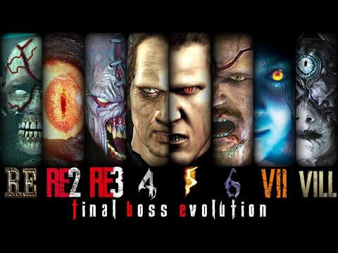

Resident Evil, known as Biohazard in Japan, was created by Capcom and first released in 1996, with Shinji Mikami leading the development. It introduced players to the eerie Spencer Mansion and truly set the foundation for modern survival horror games. Drawing inspiration from classics like Sweet Home and horror films by George A. Romero, the game focused on limited resources, tense exploration, and atmospheric storytelling, blending puzzles with survival mechanics in a way that was pretty innovative at the time.
Over the years, the series experimented with different gameplay styles—from the fixed camera angles and tank controls of the early titles to the more dynamic over-the-shoulder perspective of Resident Evil 4, and even the first-person horror of Resident Evil 7. Beyond just games, Resident Evil has had a huge impact on movies, novels, and theme park attractions, shaping gaming culture and the survival horror genre in a big way. Its unique mix of fear and excitement continues to resonate with players worldwide.
"We wanted players to experience the horror of survival — the dread of every step, every shadow." – Shinji Mikami
From tank controls to modern mechanics, Resident Evil's gameplay has continuously evolved to keep players on edge. Watch this video to see the transformation.
Resident Evil set the stage for horror games worldwide, inspiring countless titles and expanding the genre. Its influence is felt across gaming culture.